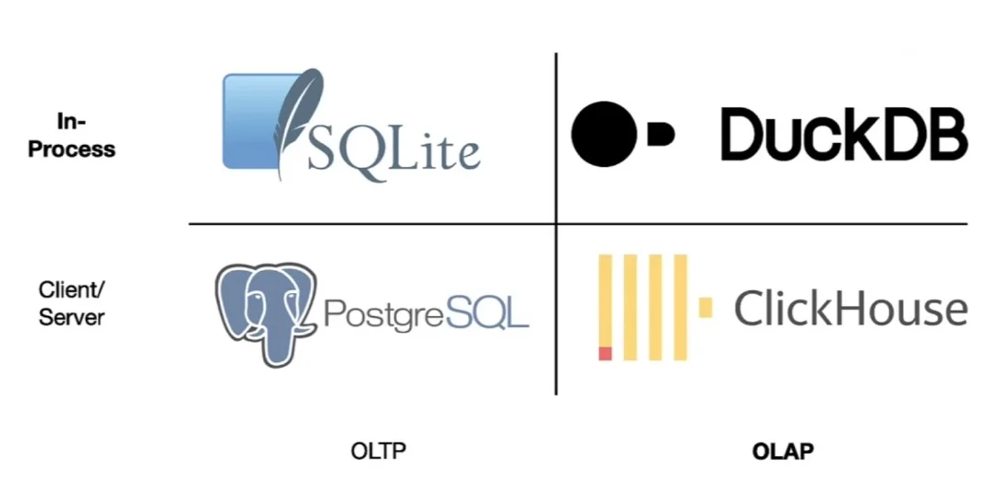

Duke University
These slides were developed by Prof. Colin Rundel and utilize his excellent rendering package duckknit.
Structured Query Language is a special purpose language for interacting with (querying and modifying) indexed tabular data.
ANSI Standard but with dialect divergence (MySql, Postgres, SQLite, etc.)
This functionality maps very closely (but not exactly) with the data manipulation verbs present in dplyr.
SQL is likely to be a foundational skill if you go into industry - learn it and put it on your CV
DuckDB is an open-source column-oriented relational database management system (RDBMS) originally developed by Mark Raasveldt and Hannes Mühleisen at the Centrum Wiskunde & Informatica (CWI) in the Netherlands and first released in 2019. The project has over 6 million downloads per month. It is designed to provide high performance on complex queries against large databases in embedded configuration, such as combining tables with hundreds of columns and billions of rows. Unlike other embedded databases (for example, SQLite) DuckDB is not focusing on transactional (OLTP) applications and instead is specialized for online analytical processing (OLAP) workloads.
From Wikipedia - DuckDB

DuckDB is a relational database just like SQLite and can be interacted with using DBI and the duckdb package.
# A tibble: 336,776 × 19
year month day dep_time sched_dep_time dep_delay arr_time
<int> <int> <int> <int> <int> <dbl> <int>
1 2013 1 1 517 515 2 830
2 2013 1 1 533 529 4 850
3 2013 1 1 542 540 2 923
4 2013 1 1 544 545 -1 1004
5 2013 1 1 554 600 -6 812
6 2013 1 1 554 558 -4 740
7 2013 1 1 555 600 -5 913
8 2013 1 1 557 600 -3 709
9 2013 1 1 557 600 -3 838
10 2013 1 1 558 600 -2 753
# ℹ 336,766 more rows
# ℹ 12 more variables: sched_arr_time <int>, arr_delay <dbl>,
# carrier <chr>, flight <int>, tailnum <chr>, origin <chr>,
# dest <chr>, air_time <dbl>, distance <dbl>, hour <dbl>,
# minute <dbl>, time_hour <dttm>library(dplyr)
tbl(con, "flights") |>
filter(month == 10, day == 29) |>
count(origin, dest) |>
arrange(desc(n))# Source: SQL [?? x 3]
# Database: DuckDB v1.3.2 [athos@Linux 6.18.46:R 4.5.1/:memory:]
# Ordered by: desc(n)
origin dest n
<chr> <chr> <dbl>
1 JFK LAX 32
2 LGA ORD 30
3 LGA ATL 29
4 JFK SFO 23
5 LGA CLT 21
6 EWR ORD 18
7 LGA DCA 16
8 LGA BOS 16
9 EWR SFO 16
10 JFK BOS 16
# ℹ more rowsDot commands are expressions that begins with . and are specific to the DuckDB CLI, some examples include:
A full list of available dot commands can be found here or listed via .help in the CLI.
┌─────────┬───────────────────┬─────────┬────────────┐
│ name │ email │ salary │ dept │
│ varchar │ varchar │ double │ varchar │
├─────────┼───────────────────┼─────────┼────────────┤
│ Alice │ alice@company.com │ 52000.0 │ Accounting │
│ Bob │ bob@company.com │ 40000.0 │ Accounting │
│ Carol │ carol@company.com │ 30000.0 │ Sales │
│ Dave │ dave@company.com │ 33000.0 │ Accounting │
│ Eve │ eve@company.com │ 44000.0 │ Sales │
│ Frank │ frank@comany.com │ 37000.0 │ Sales │
└─────────┴───────────────────┴─────────┴────────────┘The format of duckdb’s output (in the CLI) is controlled via .mode - the default is duckbox, see possible output formats.
| name | email | salary | dept |
|-------|-------------------|--------:|------------|
| Alice | alice@company.com | 52000.0 | Accounting |
| Bob | bob@company.com | 40000.0 | Accounting |
| Carol | carol@company.com | 30000.0 | Sales |
| Dave | dave@company.com | 33000.0 | Accounting |
| Eve | eve@company.com | 44000.0 | Sales |
| Frank | frank@comany.com | 37000.0 | Sales |[{"name":"Alice","email":"alice@company.com","salary":52000.0,"dept":"Accounting"},
{"name":"Bob","email":"bob@company.com","salary":40000.0,"dept":"Accounting"},
{"name":"Carol","email":"carol@company.com","salary":30000.0,"dept":"Sales"},
{"name":"Dave","email":"dave@company.com","salary":33000.0,"dept":"Accounting"},
{"name":"Eve","email":"eve@company.com","salary":44000.0,"dept":"Sales"},
{"name":"Frank","email":"frank@comany.com","salary":37000.0,"dept":"Sales"}]INSERT INTO "table"("name",email,salary,dept) VALUES('Alice','alice@company.com',52000.0,'Accounting');
INSERT INTO "table"("name",email,salary,dept) VALUES('Bob','bob@company.com',40000.0,'Accounting');
INSERT INTO "table"("name",email,salary,dept) VALUES('Carol','carol@company.com',30000.0,'Sales');
INSERT INTO "table"("name",email,salary,dept) VALUES('Dave','dave@company.com',33000.0,'Accounting');
INSERT INTO "table"("name",email,salary,dept) VALUES('Eve','eve@company.com',44000.0,'Sales');
INSERT INTO "table"("name",email,salary,dept) VALUES('Frank','frank@comany.com',37000.0,'Sales');We can subset and rename columns, sort results, and limit output using SELECT, ORDER BY, and LIMIT. Additionally, DISTINCT can be used to remove duplicate values.
We can filter rows using a WHERE clause
┌─────────┬───────────────────┬─────────┬────────────┐
│ name │ email │ salary │ dept │
│ varchar │ varchar │ double │ varchar │
├─────────┼───────────────────┼─────────┼────────────┤
│ Carol │ carol@company.com │ 30000.0 │ Sales │
│ Dave │ dave@company.com │ 33000.0 │ Accounting │
│ Frank │ frank@comany.com │ 37000.0 │ Sales │
└─────────┴───────────────────┴─────────┴────────────┘┌─────────┬───────────────────┬─────────┬─────────┐
│ name │ email │ salary │ dept │
│ varchar │ varchar │ double │ varchar │
├─────────┼───────────────────┼─────────┼─────────┤
│ Carol │ carol@company.com │ 30000.0 │ Sales │
│ Frank │ frank@comany.com │ 37000.0 │ Sales │
└─────────┴───────────────────┴─────────┴─────────┘GROUP BY groups rows for aggregation; HAVING filters after aggregation (like WHERE but for grouped results).
┌────────────┬───────┬────────────┐
│ dept │ n │ avg_salary │
│ varchar │ int64 │ double │
├────────────┼───────┼────────────┤
│ Sales │ 3 │ 37000.0 │
│ Accounting │ 3 │ 41666.67 │
└────────────┴───────┴────────────┘SELECT dept, COUNT(*) AS n, ROUND(AVG(salary),2) AS avg_salary
FROM employees GROUP BY dept
HAVING avg_salary > 38000;┌────────────┬───────┬────────────┐
│ dept │ n │ avg_salary │
│ varchar │ int64 │ double │
├────────────┼───────┼────────────┤
│ Accounting │ 3 │ 41666.67 │
└────────────┴───────┴────────────┘Grab the file:
Using DuckDB calculate the following quantities for employees.duckdb,
The total costs in payroll for this company
The number of employees in each department who earn more than $35,000
DuckDB has a neat trick in that it can treat files as tables (for supported formats), this lets you query them without having to explicitly create a table in the database.
We can also make this explicit by using the read_csv() function, which is useful if we need to use custom options (e.g. specify a different delimiter)
If we wanted to explicitly create a table from the CSV file this is also possible,
─────────── employees ───────────
───────────── main ──────────────
┌────────────────┐┌───────────────┐
│ employees ││ phone │
│ ││ │
│ name varchar ││ name varchar │
│ email varchar ││ phone varchar │
│ salary double ││ │
│ dept varchar ││ 4 rows │
│ │└───────────────┘
│ 6 rows │
└────────────────┘It is also possible to create a view from a file - this acts like a table but the data is not copied from the file. This means the file must remain accessible and is re-read on every query, but no storage is used within the database.
─────────────────── employees ────────────────────
────────────────────── main ──────────────────────
┌────────────────┐┌───────────────┐┌───────────────┐
│ employees ││ phone ││ phone_view │
│ ││ ││ │
│ name varchar ││ name varchar ││ name varchar │
│ email varchar ││ phone varchar ││ phone varchar │
│ salary double ││ │└───────────────┘
│ dept varchar ││ 4 rows │
│ │└───────────────┘
│ 6 rows │
└────────────────┘ Tables and views can be deleted using DROP
─────────────────── employees ────────────────────
────────────────────── main ──────────────────────
┌────────────────┐┌───────────────┐┌───────────────┐
│ employees ││ phone ││ phone_view │
│ ││ ││ │
│ name varchar ││ name varchar ││ name varchar │
│ email varchar ││ phone varchar ││ phone varchar │
│ salary double ││ │└───────────────┘
│ dept varchar ││ 4 rows │
│ │└───────────────┘
│ 6 rows │
└────────────────┘ DuckDB requires an ON or USING clause for joins - JOIN alone is a syntax error.
┌─────────┬───────────────────┬─────────┬────────────┬──────────────┐
│ name │ email │ salary │ dept │ phone │
│ varchar │ varchar │ double │ varchar │ varchar │
├─────────┼───────────────────┼─────────┼────────────┼──────────────┤
│ Bob │ bob@company.com │ 40000.0 │ Accounting │ 919 555-1111 │
│ Carol │ carol@company.com │ 30000.0 │ Sales │ 919 555-2222 │
│ Eve │ eve@company.com │ 44000.0 │ Sales │ 919 555-3333 │
│ Frank │ frank@comany.com │ 37000.0 │ Sales │ 919 555-4444 │
└─────────┴───────────────────┴─────────┴────────────┴──────────────┘All standard joins are supported: LEFT JOIN, RIGHT JOIN, FULL JOIN, CROSS JOIN, SEMI JOIN, ANTI JOIN, etc.
┌─────────┬───────────────────┬─────────┬────────────┬──────────────┐
│ name │ email │ salary │ dept │ phone │
│ varchar │ varchar │ double │ varchar │ varchar │
├─────────┼───────────────────┼─────────┼────────────┼──────────────┤
│ Bob │ bob@company.com │ 40000.0 │ Accounting │ 919 555-1111 │
│ Carol │ carol@company.com │ 30000.0 │ Sales │ 919 555-2222 │
│ Eve │ eve@company.com │ 44000.0 │ Sales │ 919 555-3333 │
│ Frank │ frank@comany.com │ 37000.0 │ Sales │ 919 555-4444 │
│ Alice │ alice@company.com │ 52000.0 │ Accounting │ NULL │
│ Dave │ dave@company.com │ 33000.0 │ Accounting │ NULL │
└─────────┴───────────────────┴─────────┴────────────┴──────────────┘┌─────────┬───────────────────┬─────────┬────────────┬──────────────┐
│ name │ email │ salary │ dept │ phone │
│ varchar │ varchar │ double │ varchar │ varchar │
├─────────┼───────────────────┼─────────┼────────────┼──────────────┤
│ Bob │ bob@company.com │ 40000.0 │ Accounting │ 919 555-1111 │
│ Carol │ carol@company.com │ 30000.0 │ Sales │ 919 555-2222 │
│ Eve │ eve@company.com │ 44000.0 │ Sales │ 919 555-3333 │
│ Frank │ frank@comany.com │ 37000.0 │ Sales │ 919 555-4444 │
│ Alice │ alice@company.com │ 52000.0 │ Accounting │ NULL │
│ Dave │ dave@company.com │ 33000.0 │ Accounting │ NULL │
└─────────┴───────────────────┴─────────┴────────────┴──────────────┘┌─────────┬───────────────────┬─────────┬────────────┬──────────────┐
│ name │ email │ salary │ dept │ phone │
│ varchar │ varchar │ double │ varchar │ varchar │
├─────────┼───────────────────┼─────────┼────────────┼──────────────┤
│ Bob │ bob@company.com │ 40000.0 │ Accounting │ 919 555-1111 │
│ Carol │ carol@company.com │ 30000.0 │ Sales │ 919 555-2222 │
│ Eve │ eve@company.com │ 44000.0 │ Sales │ 919 555-3333 │
│ Frank │ frank@comany.com │ 37000.0 │ Sales │ 919 555-4444 │
└─────────┴───────────────────┴─────────┴────────────┴──────────────┘┌─────────┬───────────────────┬─────────┬────────────┐
│ name │ email │ salary │ dept │
│ varchar │ varchar │ double │ varchar │
├─────────┼───────────────────┼─────────┼────────────┤
│ Alice │ alice@company.com │ 52000.0 │ Accounting │
│ Dave │ dave@company.com │ 33000.0 │ Accounting │
└─────────┴───────────────────┴─────────┴────────────┘Tables can be nested within tables for the purpose of creating more complex queries,
┌─────────┬───────────────────┬─────────┬────────────┬─────────┐
│ name │ email │ salary │ dept │ phone │
│ varchar │ varchar │ double │ varchar │ varchar │
├─────────┼───────────────────┼─────────┼────────────┼─────────┤
│ Alice │ alice@company.com │ 52000.0 │ Accounting │ NULL │
│ Dave │ dave@company.com │ 33000.0 │ Accounting │ NULL │
└─────────┴───────────────────┴─────────┴────────────┴─────────┘┌─────────┬───────────────────┬─────────┬────────────┬──────────────┐
│ name │ email │ salary │ dept │ phone │
│ varchar │ varchar │ double │ varchar │ varchar │
├─────────┼───────────────────┼─────────┼────────────┼──────────────┤
│ Bob │ bob@company.com │ 40000.0 │ Accounting │ 919 555-1111 │
│ Carol │ carol@company.com │ 30000.0 │ Sales │ 919 555-2222 │
│ Eve │ eve@company.com │ 44000.0 │ Sales │ 919 555-3333 │
│ Frank │ frank@comany.com │ 37000.0 │ Sales │ 919 555-4444 │
└─────────┴───────────────────┴─────────┴────────────┴──────────────┘A CTE (defined with WITH) is a named subquery that can be referenced by name in the main query - useful for breaking complex queries into readable steps, or reusing a subquery multiple times.
WITH combined AS (
SELECT * FROM employees NATURAL LEFT JOIN phone
)
SELECT * FROM combined WHERE phone IS NULL;┌─────────┬───────────────────┬─────────┬────────────┬─────────┐
│ name │ email │ salary │ dept │ phone │
│ varchar │ varchar │ double │ varchar │ varchar │
├─────────┼───────────────────┼─────────┼────────────┼─────────┤
│ Alice │ alice@company.com │ 52000.0 │ Accounting │ NULL │
│ Dave │ dave@company.com │ 33000.0 │ Accounting │ NULL │
└─────────┴───────────────────┴─────────┴────────────┴─────────┘What percentage of the total payroll does each department account for?
How much more (or less) than their department’s average salary does each employee earn?
To create the database you can run,
flights.duckdbThe database can then be opened from the terminal tab using,
Before we start we will set a couple of configuration options so that our output is readable.
We also include .timer on so that we get timings for our queries.
flights┌───────┬───────┬───────┬───┬──────────┬────────┬────────┬─────────────────────┐
│ year │ month │ day │ … │ distance │ hour │ minute │ time_hour │
│ int32 │ int32 │ int32 │ … │ double │ double │ double │ timestamp │
├───────┼───────┼───────┼───┼──────────┼────────┼────────┼─────────────────────┤
│ 2013 │ 1 │ 1 │ … │ 1400.0 │ 5.0 │ 15.0 │ 2013-01-01 10:00:00 │
│ 2013 │ 1 │ 1 │ … │ 1416.0 │ 5.0 │ 29.0 │ 2013-01-01 10:00:00 │
│ 2013 │ 1 │ 1 │ … │ 1089.0 │ 5.0 │ 40.0 │ 2013-01-01 10:00:00 │
│ 2013 │ 1 │ 1 │ … │ 1576.0 │ 5.0 │ 45.0 │ 2013-01-01 10:00:00 │
│ 2013 │ 1 │ 1 │ … │ 762.0 │ 6.0 │ 0.0 │ 2013-01-01 11:00:00 │
│ 2013 │ 1 │ 1 │ … │ 719.0 │ 5.0 │ 58.0 │ 2013-01-01 10:00:00 │
│ 2013 │ 1 │ 1 │ … │ 1065.0 │ 6.0 │ 0.0 │ 2013-01-01 11:00:00 │
│ 2013 │ 1 │ 1 │ … │ 229.0 │ 6.0 │ 0.0 │ 2013-01-01 11:00:00 │
│ 2013 │ 1 │ 1 │ … │ 944.0 │ 6.0 │ 0.0 │ 2013-01-01 11:00:00 │
│ 2013 │ 1 │ 1 │ … │ 733.0 │ 6.0 │ 0.0 │ 2013-01-01 11:00:00 │
└───────┴───────┴───────┴───┴──────────┴────────┴────────┴─────────────────────┘
10 rows use .last to show entire result 19 columns (7 shown)
Run Time (s): real 0.004 user 0.000000 sys 0.004795planes┌─────────┬───────┬─────────────────────────┬───┬───────┬───────┬───────────┐
│ tailnum │ year │ type │ … │ seats │ speed │ engine │
│ varchar │ int32 │ varchar │ … │ int32 │ int32 │ varchar │
├─────────┼───────┼─────────────────────────┼───┼───────┼───────┼───────────┤
│ N10156 │ 2004 │ Fixed wing multi engine │ … │ 55 │ NULL │ Turbo-fan │
│ N102UW │ 1998 │ Fixed wing multi engine │ … │ 182 │ NULL │ Turbo-fan │
│ N103US │ 1999 │ Fixed wing multi engine │ … │ 182 │ NULL │ Turbo-fan │
│ N104UW │ 1999 │ Fixed wing multi engine │ … │ 182 │ NULL │ Turbo-fan │
│ N10575 │ 2002 │ Fixed wing multi engine │ … │ 55 │ NULL │ Turbo-fan │
│ N105UW │ 1999 │ Fixed wing multi engine │ … │ 182 │ NULL │ Turbo-fan │
│ N107US │ 1999 │ Fixed wing multi engine │ … │ 182 │ NULL │ Turbo-fan │
│ N108UW │ 1999 │ Fixed wing multi engine │ … │ 182 │ NULL │ Turbo-fan │
│ N109UW │ 1999 │ Fixed wing multi engine │ … │ 182 │ NULL │ Turbo-fan │
│ N110UW │ 1999 │ Fixed wing multi engine │ … │ 182 │ NULL │ Turbo-fan │
└─────────┴───────┴─────────────────────────┴───┴───────┴───────┴───────────┘
10 rows use .last to show entire result 9 columns (6 shown)
Run Time (s): real 0.002 user 0.001613 sys 0.000000 ──────────────────── flights ─────────────────────
────────────────────── main ──────────────────────
┌──────────────────────────┐┌──────────────────────┐
│ flights ││ planes │
│ ││ │
│ year integer ││ tailnum varchar │
│ month integer ││ year integer │
│ day integer ││ type varchar │
│ dep_time integer ││ manufacturer varchar │
│ sched_dep_time integer ││ model varchar │
│ dep_delay double ││ engines integer │
│ arr_time integer ││ seats integer │
│ sched_arr_time integer ││ speed integer │
│ arr_delay double ││ engine varchar │
│ carrier varchar ││ │
│ flight integer ││ 3322 rows │
│ tailnum varchar │└──────────────────────┘
│ origin varchar │
│ dest varchar │
│ air_time double │
│ distance double │
│ hour double │
│ minute double │
│ time_hour timestamp │
│ │
│ 336776 rows │
└──────────────────────────┘What is the total number of seats available on all of the planes that flew out of New York in 2013.
Does the following seem correct?
Why or why not?
Join and select:
EXPLAIN
┌─────────────────────────────┐
│┌───────────────────────────┐│
││ Physical Plan ││
│└───────────────────────────┘│
└─────────────────────────────┘
┌───────────────────────────┐
│ UNGROUPED_AGGREGATE │
│ ──────────────────── │
│ Aggregates: sum(#0) │
└─────────────┬─────────────┘
┌─────────────┴─────────────┐
│ PROJECTION │
│ ──────────────────── │
│ seats │
│ │
│ ~336,776 rows │
└─────────────┬─────────────┘
┌─────────────┴─────────────┐
│ HASH_JOIN │
│ ──────────────────── │
│ Join Type: LEFT │
│ │
│ Conditions: ├──────────────┐
│ tailnum = tailnum │ │
│ │ │
│ ~336,776 rows │ │
└─────────────┬─────────────┘ │
┌─────────────┴─────────────┐┌─────────────┴─────────────┐
│ SEQ_SCAN ││ SEQ_SCAN │
│ ──────────────────── ││ ──────────────────── │
│ Table: ││ Table: │
│ flights.main.flights ││ flights.main.planes │
│ ││ │
│ Type: Sequential Scan ││ Type: Sequential Scan │
│ Projections: tailnum ││ │
│ ││ Projections: │
│ ││ tailnum │
│ ││ seats │
│ ││ │
│ ~336,776 rows ││ ~3,322 rows │
└───────────────────────────┘└───────────────────────────┘
Run Time (s): real 0.002 user 0.001892 sys 0.000000EXPLAIN - key operators| Operator | Description |
|---|---|
SEQ_SCAN |
Read every row of a table sequentially |
FILTER |
Apply a WHERE condition to rows |
PROJECTION |
Compute and select output columns (SELECT) |
HASH_JOIN |
Join two tables by building a hash table on the smaller one |
HASH_GROUP_BY |
Group rows and compute aggregates using a hash table (GROUP BY) |
UNGROUPED_AGGREGATE |
Compute a single aggregate over all rows (no GROUP BY) |
CROSS_PRODUCT |
Cartesian product of two inputs (CROSS JOIN) |
ORDER_BY |
Sort rows (ORDER BY) |
TOP_N |
Efficiently returns the top N sorted rows (ORDER BY + LIMIT) |
EXPLAIN ANALYZE┌─────────────────────────────────────┐
│┌───────────────────────────────────┐│
││ Query Profiling Information ││
│└───────────────────────────────────┘│
└─────────────────────────────────────┘
EXPLAIN ANALYZE SELECT sum(seats) FROM flights LEFT JOIN planes USING (tailnum);
┌────────────────────────────────────────────────┐
│┌──────────────────────────────────────────────┐│
││ Total Time: 0.0207s ││
│└──────────────────────────────────────────────┘│
└────────────────────────────────────────────────┘
┌───────────────────────────┐
│ QUERY │
└─────────────┬─────────────┘
┌─────────────┴─────────────┐
│ EXPLAIN_ANALYZE │
│ ──────────────────── │
│ │
│ 0 rows │
│ 0.00s │
└─────────────┬─────────────┘
┌─────────────┴─────────────┐
│ UNGROUPED_AGGREGATE │
│ ──────────────────── │
│ Aggregates: sum(#0) │
│ │
│ │
│ │
│ 1 row │
│ 0.00s │
└─────────────┬─────────────┘
┌─────────────┴─────────────┐
│ PROJECTION │
│ ──────────────────── │
│ seats │
│ │
│ │
│ │
│ 336,776 rows │
│ 0.00s │
└─────────────┬─────────────┘
┌─────────────┴─────────────┐
│ HASH_JOIN │
│ ──────────────────── │
│ Join Type: LEFT │
│ │
│ Conditions: │
│ tailnum = tailnum ├──────────────┐
│ │ │
│ │ │
│ │ │
│ 336,776 rows │ │
│ 0.03s │ │
└─────────────┬─────────────┘ │
┌─────────────┴─────────────┐┌─────────────┴─────────────┐
│ TABLE_SCAN ││ TABLE_SCAN │
│ ──────────────────── ││ ──────────────────── │
│ Table: ││ Table: │
│ flights.main.flights ││ flights.main.planes │
│ ││ │
│ Type: Sequential Scan ││ Type: Sequential Scan │
│ Projections: tailnum ││ │
│ ││ Projections: │
│ ││ tailnum │
│ ││ seats │
│ ││ │
│ 0.01s ││ │
│ ││ │
│ 336,776 rows ││ 3,322 rows │
│ (0.01s) ││ 0.00s │
└───────────────────────────┘└───────────────────────────┘
Run Time (s): real 0.021 user 0.049814 sys 0.000197For each carrier and departure airport, how much better or worse (as a %) is their average departure delay compared to the overall average?
┌─────────┬───────────────────┬────────────────┐
│ carrier │ carrier_avg_delay │ pct_vs_overall │
│ varchar │ double │ double │
├─────────┼───────────────────┼────────────────┤
│ US │ 3.78 │ -0.701 │
│ HA │ 4.9 │ -0.612 │
│ AS │ 5.8 │ -0.541 │
│ AA │ 8.59 │ -0.321 │
│ DL │ 9.26 │ -0.267 │
│ MQ │ 10.55 │ -0.165 │
│ UA │ 12.11 │ -0.042 │
│ OO │ 12.59 │ -0.004 │
│ VX │ 12.87 │ 0.018 │
│ B6 │ 13.02 │ 0.03 │
│ 9E │ 16.73 │ 0.323 │
│ WN │ 17.71 │ 0.401 │
│ FL │ 18.73 │ 0.482 │
│ YV │ 19.0 │ 0.503 │
│ EV │ 19.96 │ 0.579 │
│ F9 │ 20.22 │ 0.599 │
└─────────┴───────────────────┴────────────────┘
16 rows 3 columns
Run Time (s): real 0.012 user 0.031316 sys 0.002270EXPLAIN ANALYZEEXPLAIN ANALYZE
WITH overall AS (
SELECT AVG(dep_delay) AS avg_delay FROM flights
)
SELECT carrier,
ROUND(AVG(dep_delay), 2) AS carrier_avg_delay,
ROUND((AVG(dep_delay) - avg_delay)
/ avg_delay, 3)
AS pct_vs_overall
FROM flights CROSS JOIN overall
GROUP BY carrier, avg_delay
ORDER BY pct_vs_overall;┌─────────────────────────────────────┐
│┌───────────────────────────────────┐│
││ Query Profiling Information ││
│└───────────────────────────────────┘│
└─────────────────────────────────────┘
EXPLAIN ANALYZE WITH overall AS ( SELECT AVG(dep_delay) AS avg_delay FROM flights ) SELECT carrier, ROUND(AVG(dep_delay), 2) AS carrier_avg_delay, ROUND((AVG(dep_delay) - avg_delay) / avg_delay, 3) AS pct_vs_overall FROM flights CROSS JOIN overall GROUP BY carrier, avg_delay ORDER BY pct_vs_overall;
┌────────────────────────────────────────────────┐
│┌──────────────────────────────────────────────┐│
││ Total Time: 0.0097s ││
│└──────────────────────────────────────────────┘│
└────────────────────────────────────────────────┘
┌───────────────────────────┐
│ QUERY │
└─────────────┬─────────────┘
┌─────────────┴─────────────┐
│ EXPLAIN_ANALYZE │
│ ──────────────────── │
│ │
│ 0 rows │
│ 0.00s │
└─────────────┬─────────────┘
┌─────────────┴─────────────┐
│ PROJECTION │
│ ──────────────────── │
│__internal_decompress_strin│
│ g(#0) │
│ #1 │
│ #2 │
│ │
│ │
│ │
│ 16 rows │
│ 0.00s │
└─────────────┬─────────────┘
┌─────────────┴─────────────┐
│ ORDER_BY │
│ ──────────────────── │
│ round(((avg(flights.main │
│ .flights.dep_delay) - │
│ overall.avg_delay) / │
│ overall.avg_delay), 3) ASC│
│ │
│ │
│ │
│ 16 rows │
│ 0.00s │
└─────────────┬─────────────┘
┌─────────────┴─────────────┐
│ PROJECTION │
│ ──────────────────── │
│__internal_compress_string_│
│ uinteger(#0) │
│ #1 │
│ #2 │
│ │
│ │
│ │
│ 16 rows │
│ 0.00s │
└─────────────┬─────────────┘
┌─────────────┴─────────────┐
│ PROJECTION │
│ ──────────────────── │
│ carrier │
│ carrier_avg_delay │
│ pct_vs_overall │
│ │
│ │
│ │
│ 16 rows │
│ 0.00s │
└─────────────┬─────────────┘
┌─────────────┴─────────────┐
│ PROJECTION │
│ ──────────────────── │
│__internal_decompress_strin│
│ g(#0) │
│ #1 │
│ #2 │
│ │
│ │
│ │
│ 16 rows │
│ 0.00s │
└─────────────┬─────────────┘
┌─────────────┴─────────────┐
│ HASH_GROUP_BY │
│ ──────────────────── │
│ Groups: │
│ #0 │
│ #1 │
│ │
│ Aggregates: avg(#2) │
│ │
│ │
│ │
│ 16 rows │
│ 0.02s │
└─────────────┬─────────────┘
┌─────────────┴─────────────┐
│ PROJECTION │
│ ──────────────────── │
│ carrier │
│ avg_delay │
│ dep_delay │
│ │
│ │
│ │
│ 336,776 rows │
│ 0.00s │
└─────────────┬─────────────┘
┌─────────────┴─────────────┐
│ PROJECTION │
│ ──────────────────── │
│__internal_compress_string_│
│ uinteger(#0) │
│ #1 │
│ #2 │
│ │
│ │
│ │
│ 336,776 rows │
│ 0.00s │
└─────────────┬─────────────┘
┌─────────────┴─────────────┐
│ CROSS_PRODUCT │
│ ──────────────────── │
│ ├──────────────┐
│ 336,776 rows │ │
│ 0.00s │ │
└─────────────┬─────────────┘ │
┌─────────────┴─────────────┐┌─────────────┴─────────────┐
│ TABLE_SCAN ││ UNGROUPED_AGGREGATE │
│ ──────────────────── ││ ──────────────────── │
│ Table: ││ Aggregates: avg(#0) │
│ flights.main.flights ││ │
│ ││ │
│ Type: Sequential Scan ││ │
│ ││ │
│ Projections: ││ 0.00s │
│ carrier ││ │
│ dep_delay ││ │
│ ││ │
│ ││ │
│ ││ │
│ 336,776 rows ││ 1 row │
│ 0.00s ││ (0.00s) │
└───────────────────────────┘└─────────────┬─────────────┘
┌─────────────┴─────────────┐
│ PROJECTION │
│ ──────────────────── │
│ dep_delay │
│ │
│ │
│ │
│ 336,776 rows │
│ 0.00s │
└─────────────┬─────────────┘
┌─────────────┴─────────────┐
│ TABLE_SCAN │
│ ──────────────────── │
│ Table: │
│ flights.main.flights │
│ │
│ Type: Sequential Scan │
│ │
│ Projections: │
│ dep_delay │
│ │
│ │
│ │
│ 336,776 rows │
│ 0.00s │
└───────────────────────────┘
Run Time (s): real 0.010 user 0.029056 sys 0.000836system.time({
overall_avg = nycflights13::flights |>
summarise(avg_delay = mean(dep_delay, na.rm = TRUE)) |>
pull(avg_delay)
nycflights13::flights |>
group_by(carrier) |>
summarise(carrier_avg_delay = round(mean(dep_delay, na.rm = TRUE), 2), .groups = "drop") |>
mutate(pct_vs_overall = round((carrier_avg_delay - overall_avg) / overall_avg, 3)) |>
arrange(pct_vs_overall)
}) user system elapsed
0.021 0.001 0.023 Each row is one trip and includes:
| Column | Description |
|---|---|
tpep_pickup_datetime / tpep_dropoff_datetime |
Trip start and end times |
trip_distance |
Distance traveled (miles) |
PULocationID / DOLocationID |
Pickup and dropoff taxi zone |
fare_amount, tip_amount, total_amount |
Fare components |
payment_type |
How the fare was paid (card, cash, etc.) |
passenger_count |
Number of passengers |
Recent years are distributed as parquet files (one per month), with each file containing millions of rows.
# A tibble: 13 × 2
path size
<chr> <fs::bytes>
1 taxi_zone_lookup.csv 12K
2 yellow_tripdata_2024-01.parquet 47.6M
3 yellow_tripdata_2024-02.parquet 48M
4 yellow_tripdata_2024-03.parquet 57.3M
5 yellow_tripdata_2024-04.parquet 56.4M
6 yellow_tripdata_2024-05.parquet 59.7M
7 yellow_tripdata_2024-06.parquet 57.1M
8 yellow_tripdata_2024-07.parquet 49.9M
9 yellow_tripdata_2024-08.parquet 48.7M
10 yellow_tripdata_2024-09.parquet 58.3M
11 yellow_tripdata_2024-10.parquet 61.4M
12 yellow_tripdata_2024-11.parquet 57.9M
13 yellow_tripdata_2024-12.parquet 58.7M661MParquet is a binary, columnar file format widely used in data science and analytics.
Row-oriented (CSV)
name, salary, dept
Alice, 52000, Accounting
Bob, 40000, Accounting
Carol, 30000, SalesReading one column requires reading every row.
Column-oriented (Parquet)
name: [Alice, Bob, Carol, ...]
salary: [52000, 40000, 30000, ...]
dept: [Accounting, Accounting, Sales, ...]Reading one column skips all others entirely.
Key advantages over CSV: compressed (much smaller files), typed (no schema inference), fast for analytical queries (only reads needed columns). Widely used with Spark, Arrow, Pandas, and cloud data warehouses.
DuckDB can query Parquet files directly - no explicit import step needed.
Glob patterns let you query multiple files as a single table - useful for partitioned datasets.
Enable timings and create a view over all monthly Parquet files:
┌─────────────────────────────────┐
│ taxi │
│ │
│ VendorID integer │
│ tpep_pickup_datetime timestamp │
│ tpep_dropoff_datetime timestamp │
│ passenger_count bigint │
│ trip_distance double │
│ RatecodeID bigint │
│ store_and_fwd_flag varchar │
│ PULocationID integer │
│ DOLocationID integer │
│ payment_type bigint │
│ fare_amount double │
│ extra double │
│ mta_tax double │
│ tip_amount double │
│ tolls_amount double │
│ improvement_surcharge double │
│ total_amount double │
│ congestion_surcharge double │
│ Airport_fee double │
└─────────────────────────────────┘
Run Time (s): real 0.002 user 0.001964 sys 0.000001 ──────────── memory ─────────────
───────────── main ──────────────
┌─────────────────────────────────┐
│ taxi │
│ │
│ VendorID integer │
│ tpep_pickup_datetime timestamp │
│ tpep_dropoff_datetime timestamp │
│ passenger_count bigint │
│ trip_distance double │
│ RatecodeID bigint │
│ store_and_fwd_flag varchar │
│ PULocationID integer │
│ DOLocationID integer │
│ payment_type bigint │
│ fare_amount double │
│ extra double │
│ mta_tax double │
│ tip_amount double │
│ tolls_amount double │
│ improvement_surcharge double │
│ total_amount double │
│ congestion_surcharge double │
│ Airport_fee double │
└─────────────────────────────────┘Create a lookup table for the numeric payment_type codes:
Run Time (s): real 0.002 user 0.001424 sys 0.000099┌──────────────┬───────────────────┐
│ payment_type │ payment_type_desc │
│ int32 │ varchar │
├──────────────┼───────────────────┤
│ 0 │ Flex Fare trip │
│ 1 │ Credit card │
│ 2 │ Cash │
│ 3 │ No charge │
│ 4 │ Dispute │
│ 5 │ Unknown │
│ 6 │ Voided trip │
└──────────────┴───────────────────┘
Run Time (s): real 0.000 user 0.000787 sys 0.000000What fraction of the fare is tipped on average, by payment type?
SELECT payment_type_desc,
round(avg(tip_amount / fare_amount), 4) AS mean_tip_frac,
count(*) AS n
FROM taxi
JOIN payment_types USING (payment_type)
WHERE tip_amount >= 0 AND fare_amount > 0
GROUP BY payment_type, payment_type_desc
ORDER BY payment_type;┌───────────────────┬───────────────┬──────────┐
│ payment_type_desc │ mean_tip_frac │ n │
│ varchar │ double │ int64 │
├───────────────────┼───────────────┼──────────┤
│ Flex Fare trip │ 0.0356 │ 3960154 │
│ Credit card │ 0.2619 │ 30450812 │
│ Cash │ 0.0 │ 5388440 │
│ No charge │ 0.0011 │ 199213 │
│ Dispute │ 0.0009 │ 422816 │
│ Unknown │ 0.0 │ 1 │
└───────────────────┴───────────────┴──────────┘
Run Time (s): real 0.605 user 5.896994 sys 0.092841Average fare per mile for each pickup zone, joined with zone names:
SELECT * FROM (
SELECT
PULocationID AS pickup_zone,
ROUND(AVG(fare_amount), 2) AS fare_amount,
ROUND(AVG(trip_distance), 2) AS trip_distance,
ROUND(AVG(fare_amount / trip_distance), 2) AS fare_per_mile,
COUNT(*) AS num_rides
FROM taxi
WHERE trip_distance > 0 AND fare_amount > 0
GROUP BY PULocationID
) NATURAL LEFT JOIN (
SELECT LocationID AS pickup_zone, *
FROM read_csv('~/Scratch/nyctaxi/taxi_zone_lookup.csv')
)
ORDER BY fare_per_mile DESC;┌─────────────┬─────────────┬───────────────┬───────────────┬───────────┬────────────┬───────────────┬───────────────────────────────────────────────┬──────────────┐
│ pickup_zone │ fare_amount │ trip_distance │ fare_per_mile │ num_rides │ LocationID │ Borough │ Zone │ service_zone │
│ int32 │ double │ double │ double │ int64 │ int64 │ varchar │ varchar │ varchar │
├─────────────┼─────────────┼───────────────┼───────────────┼───────────┼────────────┼───────────────┼───────────────────────────────────────────────┼──────────────┤
│ 1 │ 78.82 │ 3.66 │ 2281.13 │ 1239 │ 1 │ EWR │ Newark Airport │ EWR │
│ 44 │ 97.23 │ 22.27 │ 950.01 │ 10 │ 44 │ Staten Island │ Charleston/Tottenville │ Boro Zone │
│ 265 │ 70.07 │ 27.94 │ 560.17 │ 9375 │ 265 │ N/A │ Outside of NYC │ N/A │
│ 216 │ 53.86 │ 9.13 │ 348.88 │ 14220 │ 216 │ Queens │ South Ozone Park │ Boro Zone │
│ 134 │ 48.97 │ 5.92 │ 333.39 │ 5324 │ 134 │ Queens │ Kew Gardens │ Boro Zone │
│ 84 │ 55.29 │ 15.6 │ 276.72 │ 11 │ 84 │ Staten Island │ Eltingville/Annadale/Prince's Bay │ Boro Zone │
│ 197 │ 38.18 │ 22.3 │ 189.43 │ 9452 │ 197 │ Queens │ Richmond Hill │ Boro Zone │
│ 120 │ 37.47 │ 8.78 │ 137.15 │ 242 │ 120 │ Manhattan │ Highbridge Park │ Boro Zone │
│ 251 │ 51.8 │ 10.73 │ 122.83 │ 59 │ 251 │ Staten Island │ Westerleigh │ Boro Zone │
│ 221 │ 35.38 │ 333.81 │ 114.8 │ 136 │ 221 │ Staten Island │ Stapleton │ Boro Zone │
│ 204 │ 66.21 │ 14.27 │ 103.01 │ 6 │ 204 │ Staten Island │ Rossville/Woodrow │ Boro Zone │
│ 207 │ 47.35 │ 6.2 │ 91.64 │ 687 │ 207 │ Queens │ Saint Michaels Cemetery/Woodside │ Boro Zone │
│ 240 │ 36.76 │ 8.55 │ 88.63 │ 289 │ 240 │ Bronx │ Van Cortlandt Park │ Boro Zone │
│ 118 │ 48.82 │ 13.34 │ 82.32 │ 77 │ 118 │ Staten Island │ Heartland Village/Todt Hill │ Boro Zone │
│ 129 │ 31.56 │ 27.3 │ 81.78 │ 15328 │ 129 │ Queens │ Jackson Heights │ Boro Zone │
│ 180 │ 34.52 │ 6.97 │ 70.52 │ 1847 │ 180 │ Queens │ Ozone Park │ Boro Zone │
│ 194 │ 48.13 │ 6.67 │ 61.67 │ 1765 │ 194 │ Manhattan │ Randalls Island │ Yellow Zone │
│ 145 │ 34.04 │ 7.42 │ 61.63 │ 26979 │ 145 │ Queens │ Long Island City/Hunters Point │ Boro Zone │
│ 31 │ 40.83 │ 9.19 │ 54.67 │ 331 │ 31 │ Bronx │ Bronx Park │ Boro Zone │
│ 96 │ 32.15 │ 6.22 │ 54.36 │ 262 │ 96 │ Queens │ Forest Park/Highland Park │ Boro Zone │
│ · │ · │ · │ · │ · │ · │ · │ · │ · │
│ · │ · │ · │ · │ · │ · │ · │ · │ · │
│ · │ · │ · │ · │ · │ · │ · │ · │ · │
│ 20 │ 33.84 │ 8.3 │ 8.7 │ 1693 │ 20 │ Bronx │ Belmont │ Boro Zone │
│ 205 │ 38.44 │ 52.37 │ 8.58 │ 5007 │ 205 │ Queens │ Saint Albans │ Boro Zone │
│ 86 │ 50.09 │ 14.84 │ 8.17 │ 3667 │ 86 │ Queens │ Far Rockaway │ Boro Zone │
│ 117 │ 46.78 │ 13.24 │ 8.03 │ 3673 │ 117 │ Queens │ Hammels/Arverne │ Boro Zone │
│ 248 │ 31.3 │ 48.36 │ 7.99 │ 2456 │ 248 │ Bronx │ West Farms/Bronx River │ Boro Zone │
│ 81 │ 37.76 │ 10.18 │ 7.45 │ 2038 │ 81 │ Bronx │ Eastchester │ Boro Zone │
│ 58 │ 34.61 │ 8.8 │ 6.82 │ 149 │ 58 │ Bronx │ Country Club │ Boro Zone │
│ 105 │ 20.68 │ 3.83 │ 5.88 │ 4 │ 105 │ Manhattan │ Governor's Island/Ellis Island/Liberty Island │ Yellow Zone │
│ 46 │ 44.32 │ 12.23 │ 5.81 │ 300 │ 46 │ Bronx │ City Island │ Boro Zone │
│ 59 │ 32.57 │ 8.39 │ 5.61 │ 90 │ 59 │ Bronx │ Crotona Park │ Boro Zone │
│ 110 │ 10.0 │ 1.8 │ 5.56 │ 1 │ 110 │ Staten Island │ Great Kills Park │ Boro Zone │
│ 184 │ 41.17 │ 9.86 │ 5.38 │ 159 │ 184 │ Bronx │ Pelham Bay Park │ Boro Zone │
│ 115 │ 44.13 │ 12.12 │ 5.06 │ 86 │ 115 │ Staten Island │ Grymes Hill/Clifton │ Boro Zone │
│ 199 │ 33.26 │ 7.9 │ 4.74 │ 16 │ 199 │ Bronx │ Rikers Island │ Boro Zone │
│ 2 │ 52.29 │ 14.35 │ 4.48 │ 57 │ 2 │ Queens │ Jamaica Bay │ Boro Zone │
│ 109 │ 47.79 │ 14.21 │ 4.12 │ 27 │ 109 │ Staten Island │ Great Kills │ Boro Zone │
│ 99 │ 32.7 │ 8.89 │ 3.97 │ 3 │ 99 │ Staten Island │ Freshkills Park │ Boro Zone │
│ 176 │ 36.31 │ 11.16 │ 3.7 │ 31 │ 176 │ Staten Island │ Oakwood │ Boro Zone │
│ 5 │ 37.7 │ 11.83 │ 3.28 │ 2 │ 5 │ Staten Island │ Arden Heights │ Boro Zone │
│ 6 │ 10.04 │ 7.28 │ 1.98 │ 558 │ 6 │ Staten Island │ Arrochar/Fort Wadsworth │ Boro Zone │
└─────────────┴─────────────┴───────────────┴───────────────┴───────────┴────────────┴───────────────┴───────────────────────────────────────────────┴──────────────┘
263 rows (40 shown) use .last to show entire result 9 columns
Run Time (s): real 0.248 user 2.351105 sys 0.058893